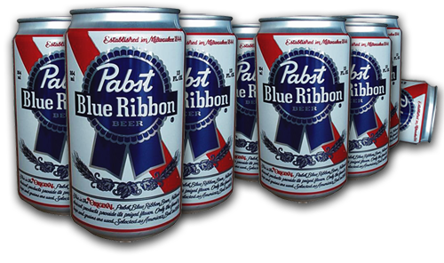

<html><body>
<script type="text/javascript">
<!--
if (top.location != self.location) {
	window.open(self.location.href);
} else {
	var colors = ['#ff0000','#00ff00','#0000ff','#ffff00','#00ffff','#ff00ff','#ffffff'];
	var changeBg = function() {
		var newcolor = colors[parseInt(Math.random()*colors.length)];
		document.body.style.background = newcolor;
	}
	setInterval(changeBg, 200);

	document.write("<center></img></center><audio src='party.mp3' autoplay loop></audio>");
}
-->
</script>
</body></html>